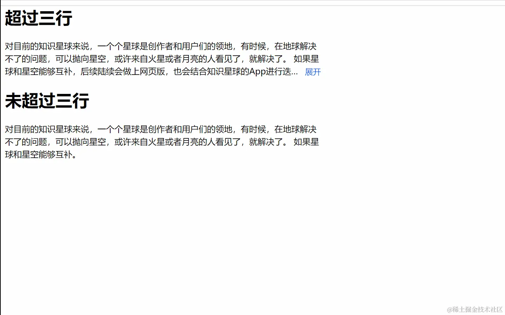

<!DOCTYPE html>
<html lang="en">
<head>
<meta charset="UTF-8" />
<meta http-equiv="X-UA-Compatible" content="IE=edge" />
<meta name="viewport" content="width=device-width, initial-scale=1.0" />
<title>Document</title>
<style>
html,
body {
height: 100%;
}
.outerElement {
display: flex;
width: 600px;
}
.innerElement {
line-height: 1.5;
overflow: hidden;
position: relative;
overflow: hidden; /*必须结合的属性,当内容溢出元素框时发生的事情*/
text-overflow: ellipsis; /*可以用来多行文本的情况下，用省略号“…”隐藏超出范围的文本 。*/
display: -webkit-box; /*必须结合的属性 ，将对象作为弹性伸缩盒子模型显示 。*/
-webkit-box-orient: vertical; /*必须结合的属性 ，设置或检索伸缩盒对象的子元素的排列方式 。*/
}
.line-clamp-three {
-webkit-line-clamp: 3; /*用来限制在一个块元素显示的文本的行数。*/
}
.line-clamp-countless {
-webkit-line-clamp: 666; /*用来限制在一个块元素显示的文本的行数。*/
}
.floatVerticalLine {
display: none;
clear: both;
float: right;
height: calc(100% - 22px);
}
.float {
float: right;
clear: both;
display: none;
margin-left: 7px;
font-size: 15px;
color: #2a3aff;
}
.float:hover {
cursor: pointer;
}
</style>
</head>
<body>
<h1>超过三行展示收起</h1>
<div class="outerElement">
<div class="innerElement">
<div class="floatVerticalLine"></div>
<div class="float">展开</div>
对目前的知识星球来说，一个个星球是创作者和用户们的领地，有时候，在地球解决不了的问题，可以抛向星空，或许来自火星或者月亮的人看见了，就解决了。
如果星球和星空能够互补，后续陆续会做上网页版，也会结合知识星球的App进行迭代在星空回答过问题，用户能访问到你的星球。觉得开星球太重，可以先到星空感受感受气氛。
对目前的知识星球来说，一个个星球是创作者和用户们的领地，有时候，在地球解决不了的问题，可以抛向星空，或许来自火星或者月亮的人看见了，就解决了。
如果星球和星空能够互补，后续陆续会做上网页版，也会结合知识星球的App进行迭代在星空回答过问题，用户能访问到你的星球。觉得开星球太重，可以先到星空感受感受气氛。
对目前的知识星球来说，一个个星球是创作者和用户们的领地，有时候，在地球解决不了的问题，可以抛向星空，或许来自火星或者月亮的人看见了，就解决了。
如果星球和星空能够互补，后续陆续会做上网页版，也会结合知识星球的App进行迭代在星空回答过问题，用户能访问到你的星球。觉得开星球太重，可以先到星空感受感受气氛。
对目前的知识星球来说，一个个星球是创作者和用户们的领地，有时候，在地球解决不了的问题，可以抛向星空，或许来自火星或者月亮的人看见了，就解决了。
如果星球和星空能够互补，后续陆续会做上网页版，也会结合知识星球的App进行迭代在星空回答过问题，用户能访问到你的星球。觉得开星球太重，可以先到星空感受感受气氛。
</div>
</div>
</body>
</html>
<script>
const floatDom = document.querySelector(".float"); //展开收起元素
const floatDomLineHeight = document.querySelector(".floatVerticalLine"); //浮动元素撑高度
const innerElementDom = document.querySelector(".innerElement"); //内容容器
if (innerElementDom.offsetHeight > 72) {
floatDom.style.display = "block";
floatDomLineHeight.style.display = "block";
innerElementDom.classList.remove("line-clamp-countless");
innerElementDom.classList.add("line-clamp-three");
}
floatDom.addEventListener("click", () => {
if (floatDom.innerText === "展开") {
floatDom.innerText = "收起";
innerElementDom.classList.remove("line-clamp-three");
innerElementDom.classList.add("line-clamp-countless");
} else {
floatDom.innerText = "展开";
innerElementDom.classList.remove("line-clamp-countless");
innerElementDom.classList.add("line-clamp-three");
}
});
</script>